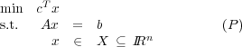
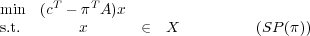

Due: Friday, February 28, 2014.
10% penalty for each day late.
Dantzig-Wolfe decomposition solves the linear programming problem

where X is a polyhedron and A is m × n. The procedure solves subproblems of the form

where (π,σ) IRm+1 is the current dual solution to the Master Problem.
- When using Dantzig-Wolfe decomposition, assume the current subproblem has an optimal solution x
with value v. Can you give a lower bound on the optimal value of (P)? What does your lower bound
become if the current dual solution (π,σ) to the master problem is dual feasible?
- Suppose (P) has been solved using Dantzig-Wolfe decomposition. How would you find the optimal dual
solution to the original problem (P)?
- The optimal basic feasible solution to the Master Problem gives a corresponding optimal solution x
to (P). Give an example to show that x might not be a basic feasible solution for (P). How would you
find an optimal basic feasible solution to (P), in the general case?
- Consider the standard form polyhedron P = {x IRn : Ax = b,x ≥ 0} where b IRm and A IRm×n of rank
m. Prove or give counterexamples to the following two statements:
- If n = m + 1 then P has at most two basic feasible solutions.
- Consider the problem of minimizing max{cTx,dTx} over P, where c,d IRn. If this problem has
an optimal solution, it has an optimal solution that is an extreme point of P.
- The Project:
Along with your solutions to this homework, hand in a brief description of what you would like to do for the
project part of this course. Your project can be one of the following:
- a topic arising in your research that fits well with the topics covered in the course. You would
work on your own on such a project.
- another project you suggest or I suggest. You can work in groups of up to three people on such a
project. All group members should contribute equally to the project. Each individual should turn
in a one-page description of their contribution to the project along with the group report.